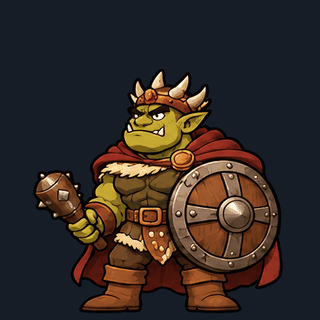

idle

8 frames · 12 fps
Frames · Report4 cột, ô 512 × 512; nền được tách bằng key_out.py --key ff00ff. Cả 7 sheet ĐẠT check_sheet.py. Attack chạm ở khung 6; special hai tay đập chùy chạm ở khung 7. Chưa cập nhật anim.json hoặc tích hợp runtime.

8 frames · 12 fps
Frames · Report12 frames · 24 fps · impact 6
Frames · Report8 frames · 24 fps
Frames · Report12 frames · 24 fps · impact 7
Frames · Report12 frames · 12 fps
Frames · Report8 frames · 12 fps
Frames · Report10 frames · 12 fps
Frames · Report